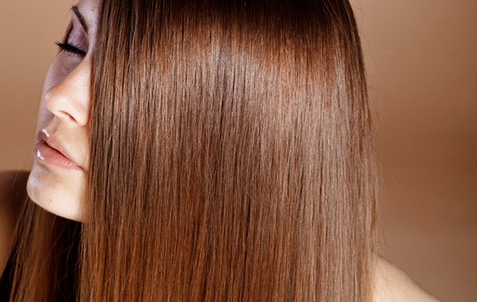
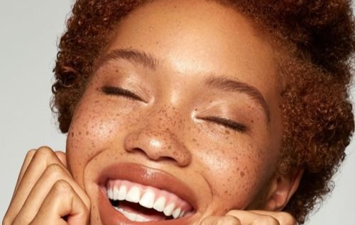
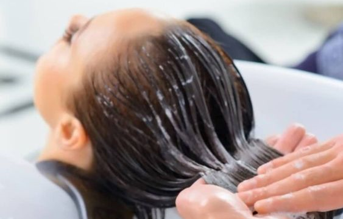

CAUTERIZAÇÃO
.



A cauterização é um tratamento que cicatriza a cutícula do cabelo para que as proteínas depositadas permaneçam por mais tempo nos fios.
Ela corrige a estrutura capilar através de meios energéticos chamados agentes catiônicos, que recuperam as fibras capilares.
Uma explicação mais popular definiria a cauterização como uma reconstrução profunda,
que sela as escamas dos fios e suaviza as pontas duplas, o que permite eliminar o aspecto arrepiado dos cabelos.
Como é um tratamento que repõe toda a queratina perdida dos fios e tem a função de fortalecer e deixar os cabelos com brilho, é indicado para qualquer tipo de cabelo, principalmente para os danificados, volumosos ou que passaram por qualquer processo químico, como o alisamento japonês, o relaxamento e a tintura. Os profissionais recomendam o mínimo de quatro aplicações, com intervalos de mais ou menos vinte dias, para um resultado eficaz.
Marcar minha consulta!